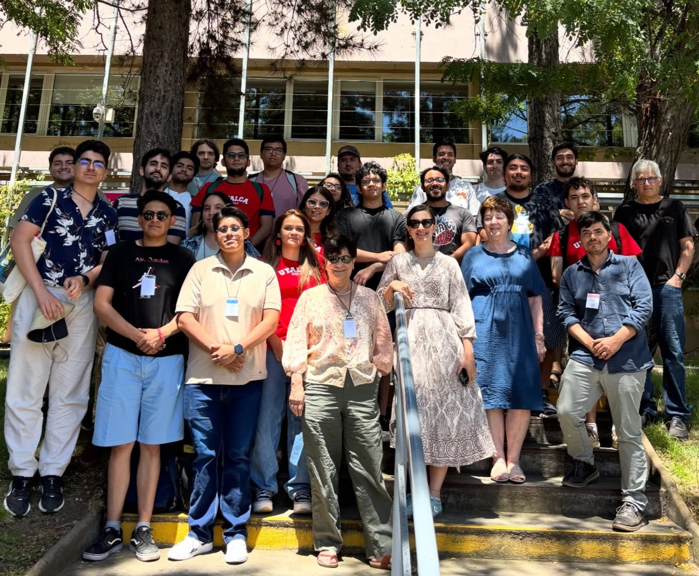

Aug 2026
Instructor, Club de Matemáticas Yachay Tech.
Minicourse An introduction to Gröbner bases. Notes and videos,
Universidad Yachay Tech, Ecuador.
Aug 2026
Instructor, Club de Matemáticas Yachay Tech.
Minicourse An introduction to Gröbner bases. Notes and videos,
Universidad Yachay Tech, Ecuador.
Jan 2026
Instructor, Campamento Hannah.
Short course Invisible Patterns: Changing without changing,
Instituto de Matemáticas, Universidad de Talca.
Jan 2026
Organizing Committee, Summer School for Undergraduates in Mathematics.
Institute of Mathematics, Universidad de Talca.

Jan 2023
Tutor, Summer School for undergraduates in Mathematics.
Exercises on Finite subgroups of SL2,
Universidad de Talca. School taught by Stephen Griffeth.